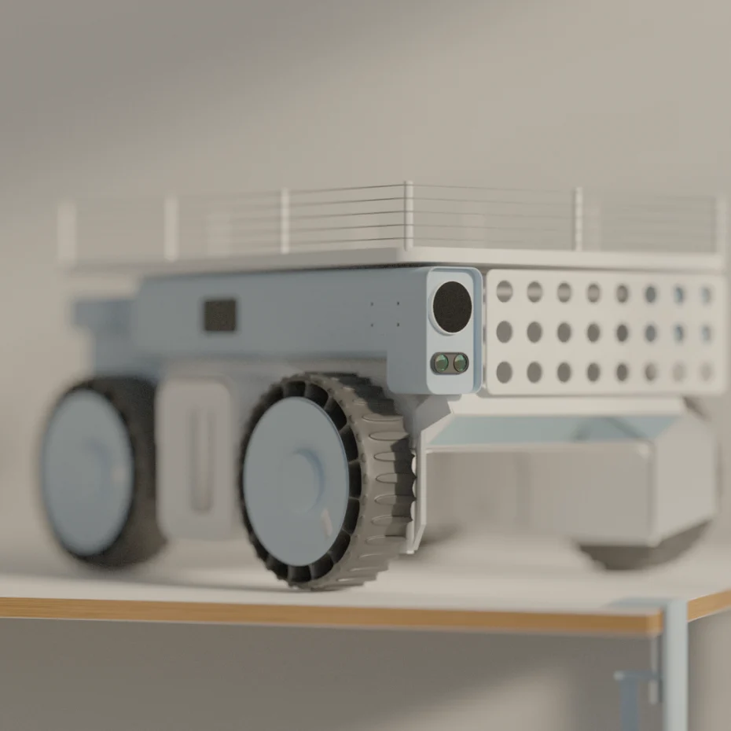
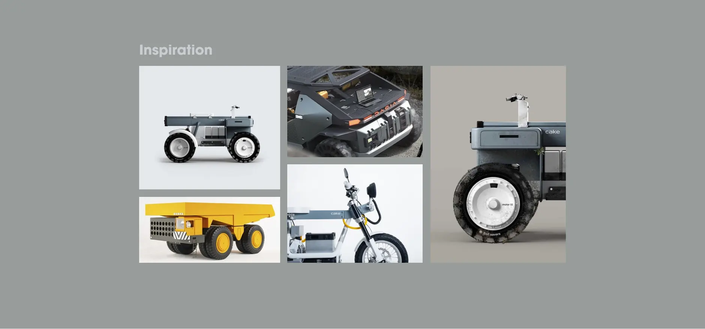
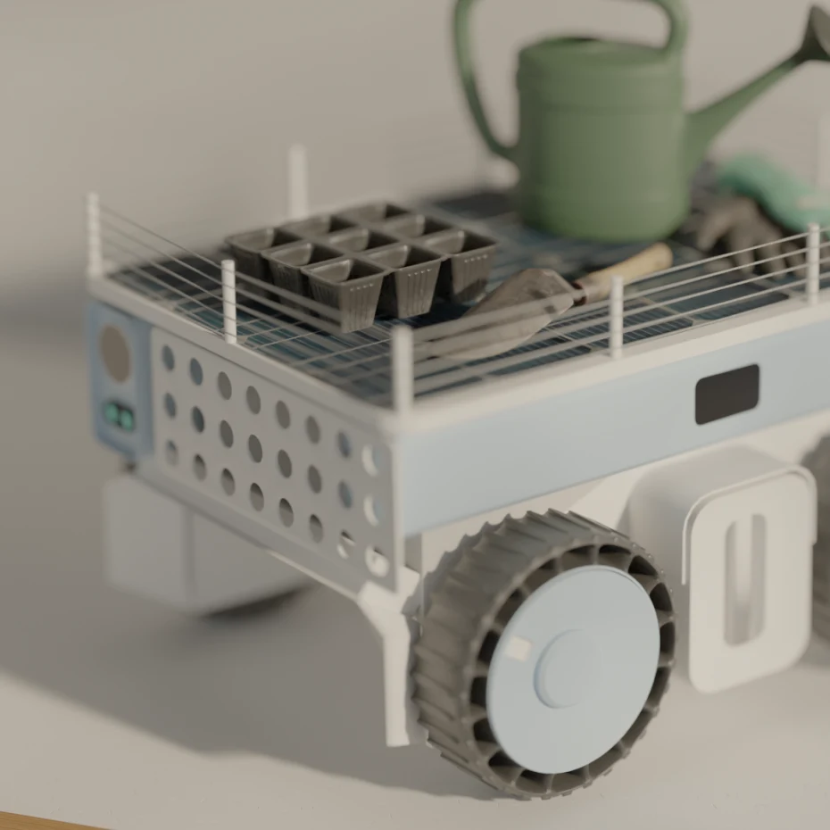

Mower Robot
Status
In Development
Type
Product Design
With this project I tried to create a clean yet utilitarian - a robust yet friendly - design that captures the spirit of
@ridecake's
amazing design language.
  